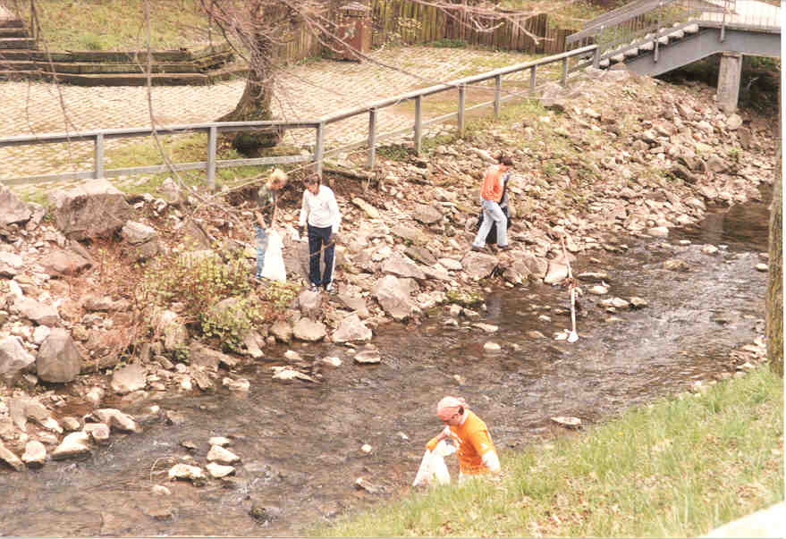
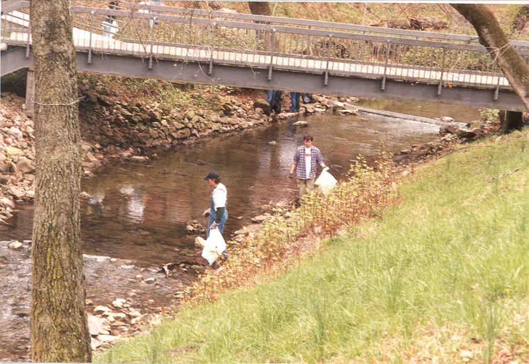
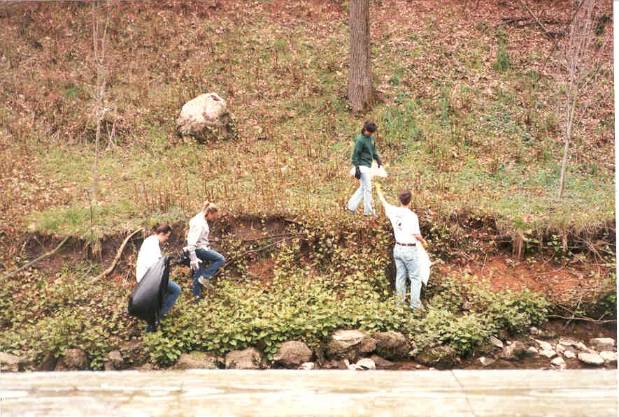

SPEAK 2001-2002 Pictures
Student Activities Fair
Make a Difference Day
ECOnference 2001
Native Plant Garden
Waste Audit
Homecoming 2001
SPEAK 2000-2001 Pictures
Here are all of the bags of trash that SPEAK and Volunteers United picked up!



Bradford Bricken Student Government Association President smiles as he helps
to pick up trash!
SPEAK/Volunteers United Clean-Up
SPEAK Meetings
UT EarthDay
Knoxville EarthDay
SPEAK/GoldenKey CleanUp
SPEAK '01
SPEAK & Volunteers United
Creek Cleanup